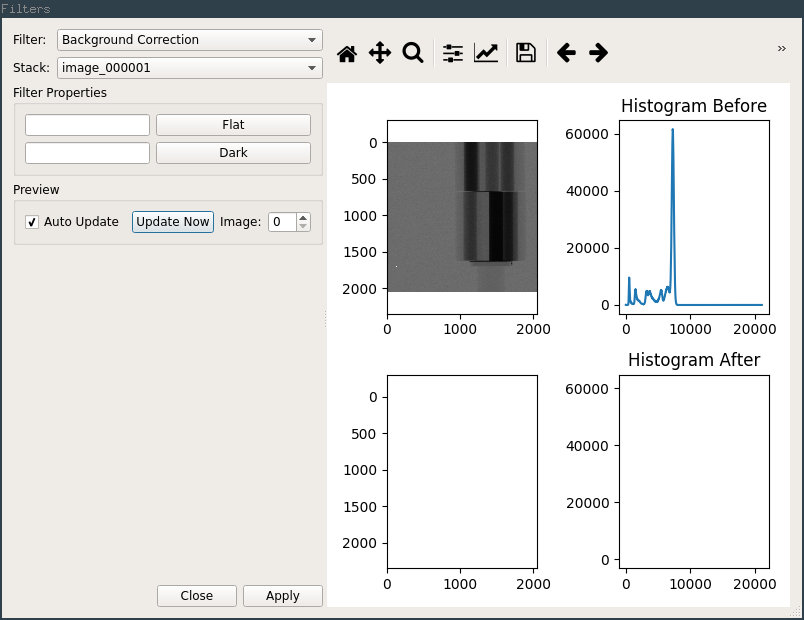
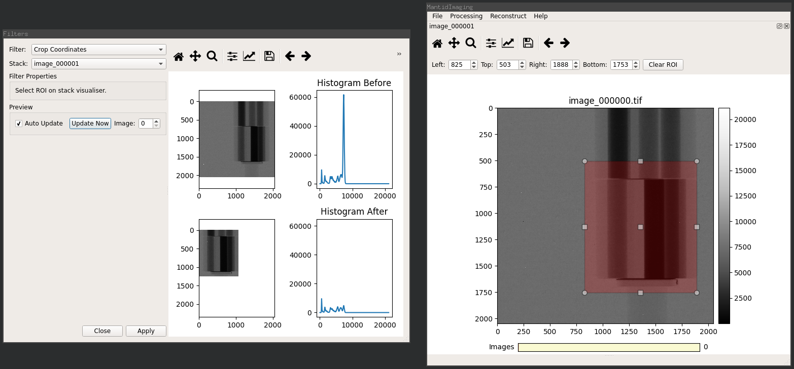

Filters¶
Selecting the Filters option in the Processing menu opens the filters dialog, this is used for applying filters to image stacks.
Filters may be applied to image stacks of any type (i.e. projection, sinogram, reconstruction), they are essentially just image filters and do not directly care about the type of image.
{kind=link}
Here you can select the type of filter and the image stack you wish to apply it to, properties of the selected filter are automatically shown in the Filter Properties section.
The right hand panel shows a preview of the image and intensity histogram before and after application of the filter. The toolbar above this section behaves in the same way as the toolbar on the Stack Visualiser.
The pan and zoom of both image and histogram plots are linked for fine inspection of the effects of the filter.
The Image control in the Preview section can be used to select the index of the image in the stack that is used to generate the preview.
Filters are automatically updated when parameters are changed. For filters that take a long time to apply even on a single image it is worthwhile to disable the Auto Update option and trigger preview updates manually using the Update Now button.
For filters that use a region of interest as a parameter (namely Crop Coordinates and ROI Normalisation) the ROI is selected using the controls on the stack visualiser for the selected image stack (as shown in the screenshot below).
{kind=link}
Pressing Apply applies the filter to every image in the stack, replacing the data in the stack.
It is normal for this to take a significant amount of time for a large stack of images.
The application of a filter can not be undone.